BEKNOPTE VERKLARING
van de
MECHELSE CATECHISMUS
ten gebruike van het middelbaar onderwijs
DERDE DEEL
–
VIER EN TWINTIGSTE LES
Van het Derde en Vierde Gebod
| Heilig steeds de Dag des Heren (Viert de Heiligdagen) | Heiligdagen? | Welke Heiligdagen zijn wij schuldig te vieren? | |||||
| Vieren? | Ophouden van alle werken die op zulke dagen verboden zijn | Welke werken worden meest verboden? | |||||
| Ons begeven tot godsdienstigheid | Wat zijn wij schuldig te doen op de Feestdagen? | ||||||
| Vader, moeder zult gij Eren | Vader en Moeder? | Wie verstaat gij door Vader en Moeder in het Vierde Gebod? | |||||
| Eren? | Wat zijn wij onze ouders schuldig? | Inwendige eerUitwendige eerGehoorzaamheidBehulpzaamheid | Zijn wij schuldig alles te doen, wat onze ouders gebieden? | ||||
| Loon? | Wat belooft God aan de kinderen die hun ouders eren? | ||||||
| Reden? | Waarom moeten wij onze ouders zó eren? | ||||||
Welke Heiligdagen zijn wij schuldig te vieren?
De Zondagen en andere Feestdagen, die van de H. Kerk ingesteld zijn
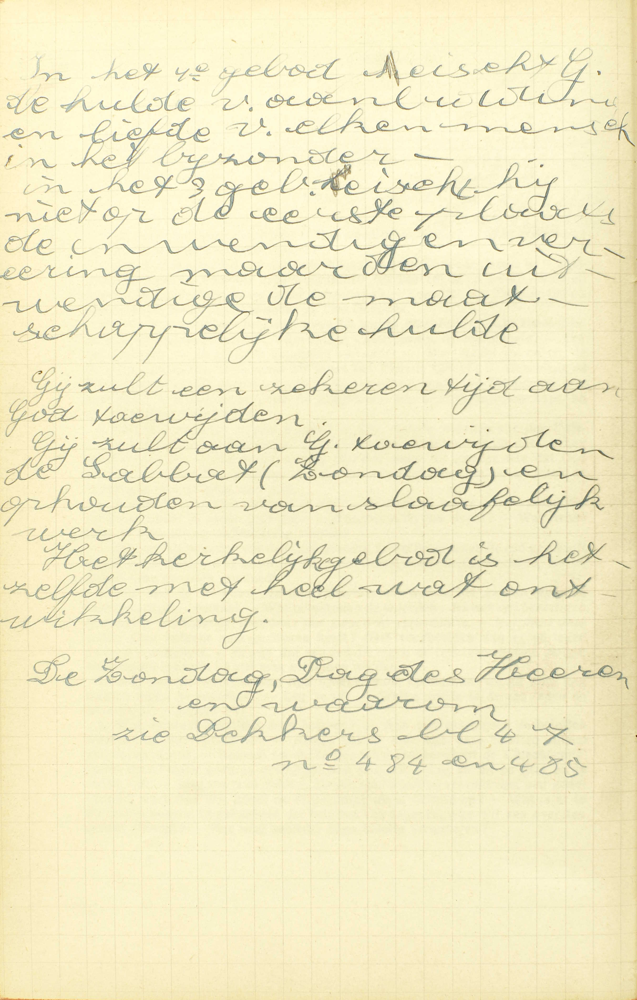 In het 4ᵉ gebod eist God de hulde van aanbidding en liefde van elke mens in het bijzonder. In het 3ᵉ gebod eist God niet op de eerste plaats de inwendige verering, maar de uitwendige, maatschappelijke hulde. Gij zult een zekere tijd aan God toewijden. Gij zult aan God toewijden de Sabbat (zondag) en ophouden van slafelijk werk. Het kerkelijk gebod is hetzelfde met heel wat ontwikkeling. 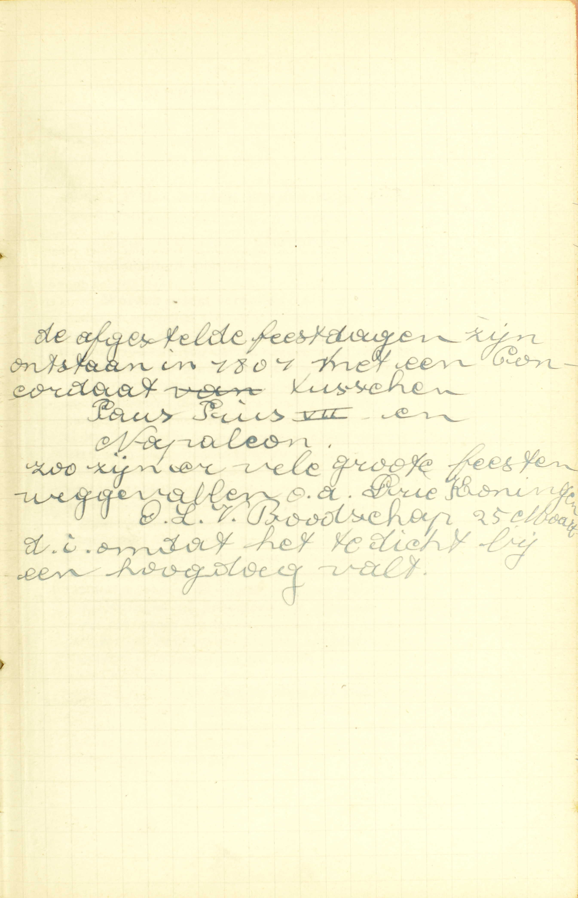 De afgestelde feestdagen zijn ontstaan in 1801 met een concordaag tussen Paus Pius VII en Napoleon. Zo zijn er veel grote feesten weggevallen, o.a. Drie Koningen en O.L.V. Boodschap (25 maart), d.i. omdat het te dicht bij een hoogdag valt. A. Twee soorten van Heiligdagen dus moeten wij vieren:
I° De Zondagen d.i. al de Zondagen van het jaar. — De Zondag is de eerste dag van de week. De H. Kerk heeft in de Nieuwe Wet, deze dag aan God bijzonder toegewijd, in plaats van de Sabbatdag (rustdag), die, volgens Gods gebod, onder de Oude Wet gevierd werd. Hoewel de Tien Geboden, als natuurwetten, onveranderlijk zijn, kon de H. Kerk nochtans die verandering doen, omdat het Derde Gebod tot de onveranderlijke natuurwet wel behoort of door de rede wordt voorgeschreven, voor zoveel het oplegt dikwijls in ’t leven een zekeren tijd aan God bijzonder toe te wijden; maar niet voor zoveel het de dag bepaalt waarop die bijzondere verering moet plaats hebben. Onder de Oude Wet was de Sabbatdag ingesteld ter gedachtenis van de voleinding van de schepping, en hij is in de Zondag door de H. Kerk veranderd ter herinnering van de verrijzenis van Christus en van de nederdaling van de H. Geest, door welke gebeurtenissen het mensdom tot het bovennatuurlijk leven van de genade is herschapen.
2° En andere Feestdagen die van de H. Kerk ingesteld zijn: namelijk O. H. Hemelvaart, tien dagen vóór Pinksteren; O. L. V. Hemelvaart, de 15 Augustus; Allerheiligen, de 1 November, en Kerstdag, de 25 December, die alle, niet door God noch door de rede voorgeschreven, maar door de overheid van de H. Kerk, de Paus en de bisschoppen, ingesteld zijn.
Buiten deze gebodene Feestdagen, zijn er nog afgestelde Heiligdagen, die eertijds gebodene Heiligdagen waren, maar het nu door de wil van de H., Kerk niet meer zijn; doch de kerkelijke overheid begeert, dat de gelovigen ze blijven onderhouden, en wil dat de goddelijke diensten op die dagen geschieden gelijk des Zondags.
De Zondagen en gebodene Heiligdagen moeten gevierd worden, te rekenen van middernacht tot middernacht.
Wat moeten wij doen om de Feestdagen te vieren?
Ophouden van alle werken, die op zulke dagen verboden zijn, en ons begeven tot godsdienstigheid
V. Feestdagen: Zondagen en de gebodene Heiligdagen.
A. Om de Feestdagen te vieren, zijn twee dingen vereist:
1° Ophouden van alle werken die op zulke dagen verboden zijn. Zekere werken zijn op die dagen verboden, niet om de ledigheid voor te staan, maar om ons de gelegenheid te geven van met godsdienstige zaken bezig te zijn.
2° Ons begeven tot godsdienstigheid; ons toeleggen op werken, waardoor wij God eren en dienen, zoals de H. Mis horen en in andere kerkelijke diensten tegenwoordig zijn, de sermoenen en de Catechismus bijwonen, tot de HH. Sacramenten naderen, thuis geestelijke lezingen doen, werken van barmhartigheid verrichten, enz.
Welke werken worden meest verboden?
Slafelijke ambachten en werken, tenware de nood het anders vereiste; daarenboven koopmanschappen, gedingen of processen
V. Worden meest verboden, d.i. worden uitdrukkelijk, in het bijzonder en ernstig verboden. — Andere werken, die de godsdienstigheid beletten, zijn ook, ten minste enigszins, op die dagen verboden.
A. Drij soorten van werken worden meest verboden:
1° Slafelijke ambachten en werken: dat zijn alle werken waarin het lichaam meer deel heeft dan de geest en die gewoonlijk door dagloners, dienaars en ambachtslieden verricht worden, zoals ploegen, zaaien, maaien, naaien, enz. Vrije werken integendeel zijn al dezulke, waarin de geest meer deel heeft dan het lichaam, zoals lezen, schrijven, studeren, onderwijs geven in wetenschappen en schone kunsten, spelen en vele andere. De eerste worden slafelijke werken genoemd, omdat zij eertijds door slaven; de laatste, vrije werken, omdat zij eertijds door vrije mensen verricht werden.
2° Koopmanschappen: de openbare markten, de openbare verkoopingen of verhuringen, en de grote handel die men drijft in de grote verkoop- en handelhuizen. Doch, ten gevolge van een algemeen gebruik, zijn enige kleine markten, alsook het kopen en verkopen van enige zaken in de winkels toegelaten geworden.
3° Gedingen of processen: de tribunaal- of gerechtswerken, zoals het openen van de rechtsstrijd, het oproepen van de strijdende partijen, het verhoor van de getuigen, het houden van een pleitrede, het uitspreken of het uitvoeren van een vonnis.
De Catechismus zegt, dat de slafelijke werken op Zon- en Feestdagen verboden zijn, — tenware de nood het anders vereiste: deze uitzondering geldt ongetwijfeld ook voor de koopmanschappen en processen; maar de Catechismus spreekt er bij deze verbodene werken niet van, omdat er slechts heel zelden reden bestaat om die werken op Heiligdagen te verrichten.
Er is nood, zo dikwijls een verboden werk vereist is om ons of onze naaste van een aanmerkelijke schade in geestelijke, lichamelijke of tijdelijke goederen te bevrijden; of ook om de godsdienstoefeningen van de Zon- en Feestdagen te verrichten. — Als de nood, die er bestaat, door zichzelf geen genoegzame reden is om die werken op een Heiligdag te mogen doen, moet men, indien men nochtans het werk wil verrichten, aan zijn pastoor dispensatie vragen.
Wat zijn wij schuldig te doen op de Feestdagen?
Ten minste Mis te horen, hoewel wij ook dan behoren in sermoenen, christelijke leren en andere kerkelijke diensten tegenwoordig te zijn
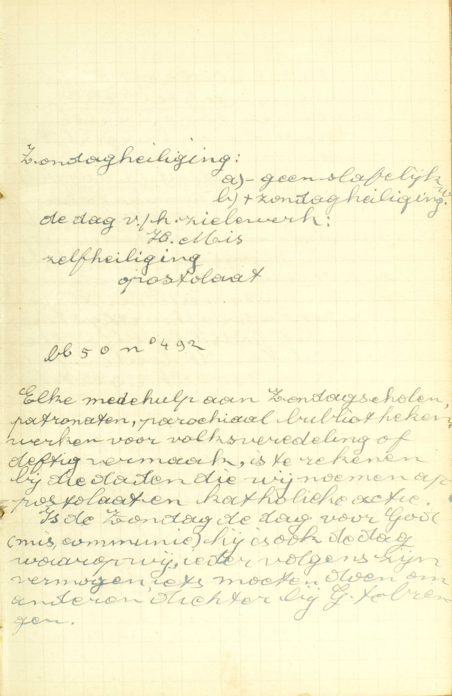 Elke medehulp aan Zondagsscholen, patronaten, parochiale bibliotheken, werken voor volksveredeling of deftig vermaak, is te rekenen bij die daden die wij noemen apostolaten en katholieke actie. Is de zondag de dag voor God (mis, communie), hij is ook de dag waarop wij, ieder volgens zijn vermogen, iets moeten doen om anderen dichter bij God te brengen. A. De Catechismus leert ons hierover twee dingen:
1° Wij moeten ten minste Mis horen: wij zijn volstrekt gehouden Mis te horen, zodanig dat wij tegen het Derde Gebod ernstig zondigen, met op Zon- en Feestdagen de Mis vrijwillig te verzuimen.
2° Wij behoren ook in sermoenen, christelijke leren en andere kerkelijke diensten tegenwoordig te zijn: d.i. alhoewel wij uitsluitend volstrekt verplicht zijn Mis te horen, betaamt het nochtans ten zeerste en is het zelfs enigszins bevolen, ook in de sermoenen en christelijke leren en in de andere kerkelijke diensten, zoals Vespers en Lof, tegenwoordig te zijn. Bijgevolg, wie op Zon- en Feestdagen, uit nalatigheid, luiheid of ongodsdienstigheid, niets anders doet dan een Mis bijwonen, maakt zich gemakkelijk aan dagelijkse zonde schuldig. — Iemand, die geen genoegzame kennis heeft van het geloof, zal zich, door het verzuimen van sermoenen en christelijke leren, niet zelden aan doodzonde schuldig maken.
De H. Geschiedenis leert ons hoe streng het geboden is de Zon- en de gebodene Feestdagen te vieren: een Israëliet, die in de woestijn op een Sabbatdag hout geraapt had, werd door God zelf veroordeeld om door de menigte gestenigd te worden; — en om de Israëlieten in de woestijn het gebod van de Sabbat te vieren gedurig voor ogen te houden, liet God op die dag alleen geen manna vallen, maar verdubbelde die hemelse spijs de dag te voren, en, hoewel het manna op andere dagen nooit tot ’s anderdaags kon bewaard worden, bleef het toch voor de dag des Heren versch en goed.
Wie verstaat gij door Vader en Moeder in het Vierde Gebod?
Onze ouders, van wie wij geboren zijn, en alle oversten, zo geestelijke als wereldlijke
A. Twee soorten van personen komen onder de naam van Vader en Moeder:
1° Onze ouders van wie wij geboren zijn, te weten: vader en moeder, onze grootvaders en grootmoeders, en al degenen die rechtstreeks hun plaats vervangen.
2° Alle oversten: al degenen die macht hebben om ons te besturen, te beschermen, te helpen, te onderwijzen, — zoo geestelijke, zowel degenen, die voor onze ziel of voor ons eeuwig geluk zorgen, zoals de Paus van Rome, onze bisschop, onze pastoor en de andere priesters, die ons in ’t werk van de zaligmaking bijstaan, — als wereldlijke, als de anderen, die rechtstreeks zorgen voor ons tijdelijk welzijn.
De overheid van Vader en Moeder is het zinnebeeld van alle overheid; al de andere oversten hebben er deel in, en kunnen zo allerbest onder de naam van Vader en Moeder verstaan worden.
Wat zijn wij onze ouders schuldig?
Inwendige en uitwendige eer, gehoorzaamheid en behulpzaamheid
A. Wij zijn onze ouders schuldig:
1° Inwendige eer, d.w.z. dat wij onze ouders of oversten, als zulken, namelijk als plaatsvervangers van God moeten erkennen of achten, en volgens die waardigheid op hen betrouwen hebben en hen beminnen. — Tegen deze plicht zondigen al degenen, die hun ouders of oversten verachten, hun kwaad wensen, zich in hun ongeluk verheugen, van alle overheid zouden willen ontslagen zijn.
2° Uitwendige eer: wij moeten die inwendige achting, dit inwendig betrouwen, die inwendige liefde, welke wij onze ouders verschuldigd zijn, doen uitschijnen, door woorden en werken uitdrukken, Hieraan blijven te kort al degenen, die hun ouders of oversten met harde en onbetamelijke woorden aanspreken, die met hen spotten en lachen, die jegens hen onbeleefd en ontoegevend zijn, die verzuimen de zegen van vader en moeder te vragen, enz.
3° Gehoorzaamheid, d.w.z. dat wij ons gewillig aan de geboden van onze ouders en oversten onderwerpen en ze uitvoeren moeten.
4° Behulpzaamheid: wij zijn verplicht onze ouders en oversten bij te staan in hun tijdelijke en geestelijke noodwendigheden. Bijgevolg moeten wij a) ons wel wachten van hen te bedroeven, b) hun, als zij in lichamelijken nood zijn, het nodige verschaffen voor zoveel wij kunnen; en hen, voor hetgeen de ziel aangaat, meer en meer tot het goede trachten te trekken, hun de HH. Sacramenten op hun sterfbed bezorgen en veel voor hen bidden, en c) hun gebreken met liefde verdragen.
Zijn wij schuldig alles te doen, wat onze ouders gebieden?
Ja, als het niet kwaad is en tegen God niet strijdt
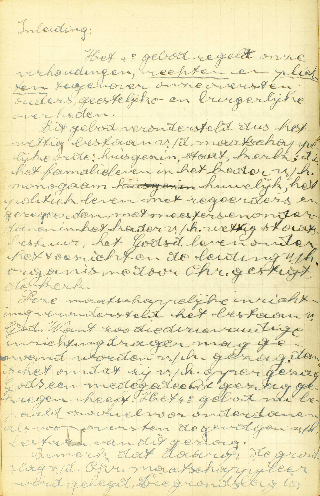 Het 4ᵉ gebod regelt onze verhoudingen, rechten en plichten tegenover onze oversten, ouders, geestelijk en burgerlijke overheden. Dit gebod veronderstelt dus het wettig bestaan van de maatschappelijke orde: huisgezin, staat, kerk, d.i. het familieleven in het kader van het monogaam huwelijk, het politiek leven met regeerders en geregeerden, met meesters en onderdanen en in het kader van het wettig staatsbestuur, het Godsdienstig leven onder het toezicht en de leiding van het organisme door Christus ingesteld: de kerk.
Deze maatschappelijke inrichting veronderstelt het bestaan van God. Want zo die drievoudige inrichting drager mag genoemd worden van het gezag, dan is het omdat zij van het oppergezag Gods een medegedeeld gezag gekregen heeft. Het 4ᵉ gebod nu bepaalt zowel voor de onderdanen als voor oversten de gevolgen avn het bestaan van dit gezag. Bemerk dat daarop de grondslag van de christelijke maatschappijleer werd gelegd. 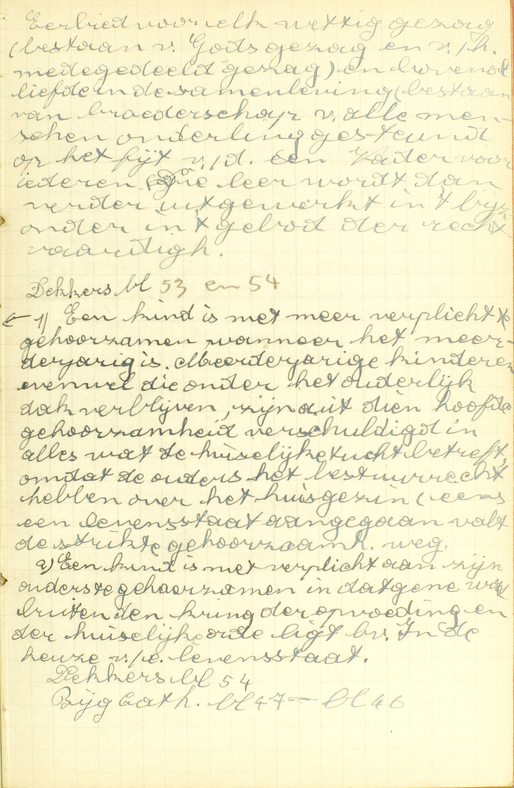 Die grondslag is: Eerbied voor elk wettig gezag (bestaan van Gods gezag en van het medegedeeld gezag) en bovenal liefde in de samenleving (bestaan van broederschap van alle mensen onderling).
1) Een kind is niet meer verplicht te gehoorzamen wanneer het meerderjarig is. Meerderjarige kinderen evenwel die onder het ouderlijk dak verblijven, zijn uit die hoofde gehoorzaamheid verschuldigd in alles wat de huiselijke tucht betreft, omdat de ouders het bestuursrecht hebben over het huisgezin. Eens een levensstaat aangegaan, valt de strikte gehoorzaamheid weg.
2) Een kind is niet verplicht aan zijn ouders te gehoorzamen in datgene wat buiten de kring van de opvoeding en de huiselijke orde ligt, b.v. in de keuze van een levensstaat. A. De Catechismus leert ons hier twee dingen: 1° dat wij, in ’t algemeen, alles moeten doen wat onze ouders gebieden, en 2° dat er aan deze regel uitsluitend uitzondering te maken is, als de gebodene zaak kwaad is en tegen God strijdt: zonde is, of ten minste tegen God strijdt met zijn raden tegen te spreken of met de palen te buiten te gaan, die God aan de macht van de ouders en van de oversten gesteld heeft.
Wat belooft God aan de kinderen die hun ouders eren?
Een lang en gelukkig leven, en namaals het eeuwig leven
A. God belooft die kinderen:
1° Een lang en gelukkig leven: een langdurig leven, en ook rust, vrede, voorspoed, gezondheid en allerlei geestelijke gaven, die het leven aangenaam en vruchtbaar maken.
En 2° namaals het eeuwig leven: een bijzondere zekerheid van wel te sterven en de hemel te bekomen.
Deze belofte is het Vierde Gebod gans eigen, en God heeft ze er willen aan vasthechten, omdat de rede vraagt, dat de leenheer zijn leenman op zijn leengoed late, indien deze dankbaar en eerbiedig is jegens zijn weldoener. Daarom heeft God gewild, dat de kinderen, die door hun ouders op het leengoed van het natuurlijk leven en van het leven van de genade gesteld zijn, op dat leengoed bevestigd worden, als zij hun weldoeners eer en dankbaarheid tonen.
Soms geschiedt het, dat kinderen, die hun ouders zeer wel eren, nochtans vroegtijdig sterven. God laat dit toe, omdat dit leven hun schadelijk of minder profijtig zou zijn, en Hij vergoedt hun die verkorting van het leven door menigvuldige genaden, zodat zij op korten tijd zoveel als door een lang leven kunnen verdienen.
Waarom moeten wij onze ouders zó eren?
Omdat ons alle goed naast God van hen komt, en zij ons in Gods plaats regeren
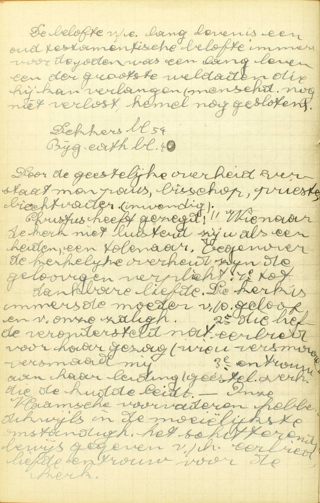 De belofte van een lang leven is een oud-testamentische belofte, immers voor de joden was een lang leven een van de grootste weldaaden die hij kan verlangen (mensheid nog niet verlost, hemel nog gesloten).
Door de geestelijke overheid verstaat men paus, bisschop, priester, biechtvader (inwendig). Christus heeft gezegd: “Wie naar de kerk niet luistert, zij u als een heiden, een tollenaar.” Tegenover de kerkelijke overheid zijn de gelovigen verplicht 1ᵉ tot dankbare liefde, De kerk is immers de moeder van ons geloof en van onze zaligheid. 2ᵉ Die liefde veronderstelt natuurlijke eerbied voor haar gezag (wie u versmaad, versmaad mij). 3ᵉ En trouw aan haar leiding (geestelijke overheid), die de kudde leidt. Onze Vlaamse voorvaderen hebben dikwijls, in de moeilijkste omstandigheden, het schitterend bewijs gegeven van eerbied, liefde en trouw voor de kerk. 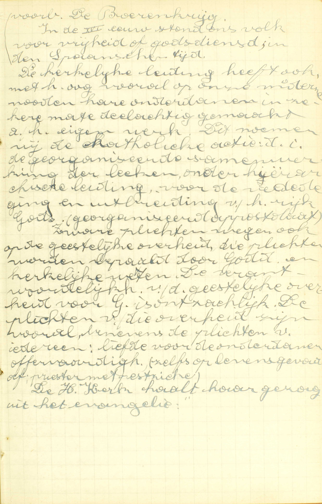 Voorbeeld: de Boerenkrijg. In de XVIᵉ eeuw stond ons volk voor vrijheid of godsdienst in de Spaanse tijd. De kerkelijke leiding heeft ook, met het oog vooral op onze mindere noden, haar onderdanen in zekere mate deelachtig gemaakt aan haar eigen werk. Dit noemen wij de katholieke actie: d.i. de georganiseerde samenwerking van de leken, onder hiërarchische leiding, voor de verdediging en uitbreiding van het rijk gods (georganiseerd apostolaat). Zware plichten wegen ook op de geestelijke overheid, die plichten worden bepaald door Goddelijke en kerkelijke wetten. De verantwoordelijkheid van de geestelijke overheid voor God is ontzachelijk. De plichten van die overheid zijn vooral, benevens de plichten van iedereen: liefde voor de onderdanen, offervaardigheid (zelfs op levensgevaar af, priester met pestzieke). De heilige Kerk haalt haar gezag uit het evangelie. A. Om twee redenen moeten wij hen zó eren:
1° Omdat ons alle goed naast God van hen komt: omdat zij na God, die het eerste beginsel en de fontein is van alle goed, de bijzonderste en de voornaamste oorzaak zijn van ons goed, zowel voor het lichaam als voor de ziel.
2° Omdat zij ons in Gods plaats regeren: omdat zij van God macht ontvangen hebben om ons in zijn naam te leiden en te besturen.
Indien zij na God onze grootste weldoeners en Gods plaatsvervangers zijn, moeten wij hen noodzakelijk inwendig en uitwendig eren, daar wij inwendig en uitwendig die dubbele waardigheid in hen moeten erkennen. Daarenboven, gelijk een koning voorzeker eist, dat wij zijn plaatsvervangers eren, zo eist ook God ongetwijfeld, dat wij onze ouders en oversten vereren, die ons in zijn plaats regeren.
den treffende voorbeelden van eerbied en gehoorzaamheid jegens de ouders, in Jozef die, alhoewel hij in Egypte de eerste na de koning was, zijn verarmde vader Jacob te gemoet ging en hem aan de hals vloog; —in de jongen Tobias, die aan zijn vader zegde: al wat gij mij gebiedt zal ik doen; — in de jeugdigen Samuel die, denkende dat de opperpriester Heli hem riep, tot driemaal van zijn bed opstond en tot hem ging; — en in het bijzonder nog in Jezus Christus, die in alle omstandigheden aan zijn ouders heeft willen onderdanig zijn.
VRAGEN
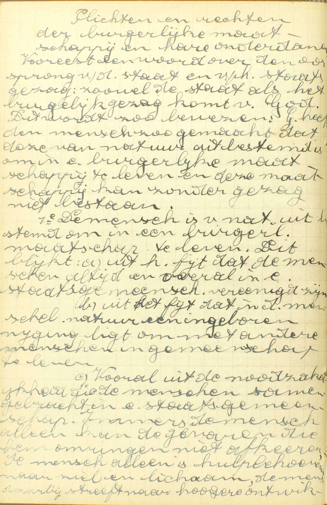 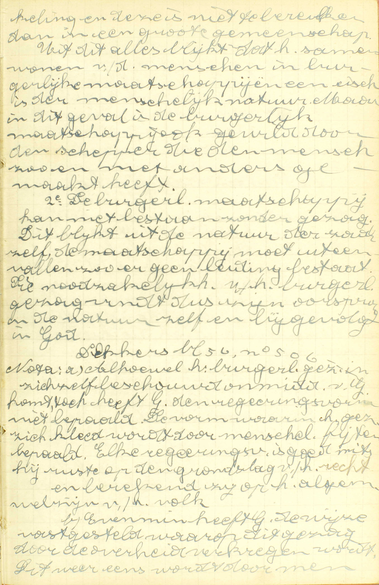 Plichten en rechten van de burgerlijke maatschappij en haar onderdanen. Vooreerst een woord over de oorsprong van de staat en van het staatsgezag: zowel de staat als het burgerlijk gezag komt van God. Dit wordt zo bewezen: God heeft de mens zo gemaakt dat deze van natuur uit bestemd is om in een burgerlijke maatschappij te leven en deze maatschappi kan zonder gezag niet bestaan.
1ᵉ De mens is van natuur uit bestemd om in een burgerlijke maatschappij te leven. Dit blijkt: a) uit het feit dat de mensen altijd en overal in een staatsgemeenschap verenigd zijn, b) uit het feit dat in de menselijke natuur een ingeboren neiging ligt om met andere mensen in gemeenschap te leven, c) vooral uit de noodzakelijkheid die de mensen samengebracht in een staatsgemeenschap. Immers de mens alleen kan de gevaren die hem omringen niet afkeren, de mens alleen is hulpbehoevend naar ziel en lichaam, de mens daarbij streeft naar hogere ontwikkeling en deze is niet te bereiken dan in een grote gemeenschap. Uit dit alles blijkt dat het samenwonen van de mensen in burgerlijke maatschappijen een eis is van de menselijke natuur. Maar in dit geval is de burgerlijke maatschappij ook gewild door de schepper die de mens zo en niet anders gemaakt heeft.
2ᵉ De burgerlijke maatschappij kan niet bestaan zonder gezag. Dit blijkt uit de natuur van de zaak zelf, de maatschappij moet uiteenvallen zo er geen leiding bestaat. Die noodzakelijkheid van het burgerlijk gezag vindt dus zijn oorsprong in de natuur zelf en bijgevolg in God.
Nota: a) Alhoewel het burgerlijk gezag in zichzelf beschouwd onmiddelijk van God komt, toch heeft God de regeringsvorm niet bepaald. De vorm waarin het gezag zich kleed, wordt door menselijke feiten bepaald. Elke regeringsvorm is goed, mits hij ruste op de grondslag van het recht en berekend zij op het algemeen welzijn van het volk.
b) Evenmin heeft God de wijze vastgesteld waarop dit gezag door de overheid verkregen wordt. Dit weer eens wordt door menselijke feiten bepaald: geboorterecht, keuze van het volk. 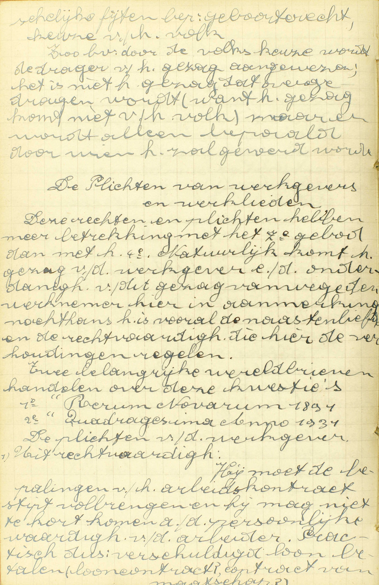 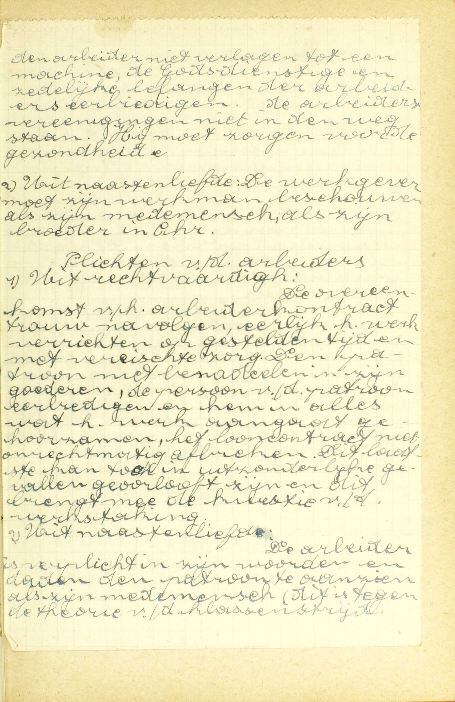 Zo b.v. door de volkskeuze wordt de drager van het gezag aangewezen; het is niet het gezag dat overgedragen wordt (want het gezag komt niet van het volk), maar er wordt alleen bepaald door wie het zal gevoerd worden.
De Plichten van werkgevers en werklieden
Deze rechten en plichten hebben meer betrekking met het 7ᵉ gebod dan met het 4ᵉ. Natuurlijk komt het gezag van de werkgever en de onderdanigheid van dit gezag vanwege de werknemer hier in aanmerking. Nochtans het is vooral de naastenliefde en de rechtvaardigheid die hier de verhoudingen regelen. Twee belangrijke wereldbrieven handelen over deze kwesties: 1ᵉ “Rerum Novarum 1891”, 2ᵉ “Quadragesima Anno 1931”.
De plichten van de werkgever. 1) Uit rechtvaardigheid: hij moet de bepalingen van het arbeidscontract stipt volbrengen en hij mag niet tekortkomen aan de persoonlijke waardigheid van de arbeider. Praktisch dus: verschuldigd loon betalen. De arbeider niet verlagen tot een machine, de godsdienstige en zedelijke belangen van de arbeiders eerbiedigen, de arbeidersverenigingen niet in de weg staan. Hij moet zorgen voor de gezondheid. 2) Uit naastenliefde: de werkgever moet zijn werkman beschouwen als zijn medemens, als zijn broeder in Christus.
Plichten van de arbeiders
1) Uit rechtvaardigheid: de overeenkomst van het arbeidercontract trouw navolgen, eerlijk het werk verrichten, op gestelde tijd en met vereiste zorg. De patroon niet benadelen in zijn goederen, de persoon van de patroon eerbiedigen en hem in alles wat het werk aangaat gehoorzamen, het looncontract niet onrechtmatig afbreken. Dit laatste kan toch in uitzonderlijke gevallen geoorloofd zijn en dit brengt mee de kwestie van de werkstaking. 2) Uit naastenliefde: De arbeider is verplicht in zijn woorden en daden de patroon te aanzien als zijn medemens (dit is tegen de theorie van de klassenstrijd). 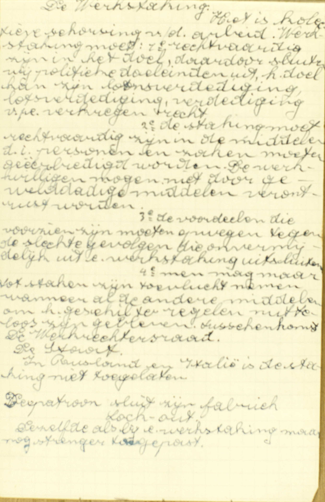 De Werkstaking
Het is collectieve schorsing van de arbeid. Werkstaking moet: 1ᵉ rechtvaardig zijn in het doel, daardoor sluiten wij politieke doeleinden uit, het doel kan zijn loosverdediging, lotsverdediging, verdediging van een verkregen recht. 2ᵉ De staking moet rechtvaardig zijn in de middelen, d.i. personen en zaken moeten geëerbiedigd worden. De werkwilligen mogen niet door gewelddadige middelen verontrust worden. 3ᵉ De voordelen die voorzien zijn moeten opwegen tegen de slechte gevolgen die onvermijdelijk uit een werkstaking uitsluiten. 4ᵉ Men mag maar tot staken zijn toevlucht nemen wanneer alle andere middelen om het geschil te regelen nutteloos zijn gebleven. Tussenkomst.
De Werkrechtersraad
De staat. In Rusland en Italië is de staking niet toegelaten. De patroon sluit zijn fabriek – lock-out. Dezelfde als bij een werkstaking, maar nog strenger toegepast. Welke Geboden worden in deze les uitgelegd? — Hoe kan de uitlegging van ieder van deze Geboden verdeeld worden? — Wat onderzoekt de Catechismus in ieder van die delen?
Welke soorten van Heiligdagen zijn wij schuldig te vieren? — De hoeveelste dag van de week is de Zondag? — Welken dag van de week vierde men onder de Oude Wet? — Wie heeft die verandering van de een dag in de anderen gedaan? — Hoe is die verandering kunnen geschieden, daar de Tien Geboden onveranderlijk zijn? — Waarom heeft God onder de Oude Wet de Sabbatdag als Heiligdag voorgeschreven, en waarom is die dag nu in de Zondag veranderd? — Welke andere Feestdagen moeten wij, buiten de Zondagen, vieren en door wie zijn zij ingesteld? — Wat zijn afgestelde Feestdagen? — Wat gebiedt de H. Kerk nopens die Feestdagen, en wat begeert zij op die dagen van de gelovigen? — Hoe moet men de Zon en Feestdagen rekenen?
Zeg hoeveel dingen er vereist zijn om de Feestdagen te vieren, en noem ze met de woorden van de Catechismus. — Met welk inzicht is ons voorgeschreven op de Feestdagen op te houden van zekere werken? — Wat is ons begeven tot godsdienstigheid? — Noem de bijzonderste werken van godsdienstigheid,
Geef de zin van de vraag: welke werken worden meest verboden. — Zeg, met de woorden van de Catechismus, welke werken meest verboden zijn. — Leg die woorden uit. — Mogen die werken volstrekt nooit op Zon- of Feestdagen gedaan worden? — Zeg, met de woorden van de Catechismus, wanneer zij op die dagen mogen geschieden, en leg die woorden uit. — Als de nood niet groot genoeg schijnt, om een verboden werk te verrichten, en dat men het nochtans begeert uit te voeren, wat staat er dan te doen?
Hoeveel en welke dingen leert ons de Catechismus nopens hetgeen wij schuldig zijn te doen op de Feestdagen? — Hoe zijn wij verplicht op die dagen Mis te horen? — Bewijs uw antwoord door de woorden van de Catechismus. — Hoe zijn wij, volgens de Catechismus, gehouden op die dagen in de sermoenen en kerkelijke diensten tegenwoordig te zijn? — Leg het woord behoren uit. — Wanneer zal iemand dodelijk zondigen, met naar de sermoenen en onderrichtingen niet te gaan?
Zeg, met de woorden van de Catechismus hoeveel soorten van personen onder Vader en Moeder in het vierde Gebod verstaan worden. — Leg de woorden van de Catechismus uit. — Hoe kunnen alle oversten onder de naam van Vader en Moeder verstaan worden?
Zeg hoeveel en welke dingen wij onze ouders schuldig zijn. — Leg ze alle uit.
Zeg, met de woorden van de Catechismus, welke uitzonderingen er te maken zijn aan de algemenen regel die ons de gehoorzaamheid aan onze ouders oplegt. — Leg die woorden uit.
Hoeveel en welke dingen belooft God, volgens de Catechismus, aan de kinderen die hun ouders eren? — Leg die dingen uit. — Is die belofte aan dit Gebod eigen, of bestaat zij ook voor al de andere Geboden? — Waarom heeft God deze bijzondere belofte aan dit Gebod gedaan? — Hoe kunnen wij met deze belofte overeenbrengen dat kinderen, die hun ouders wel eren, soms vroegtijdig sterven?
Zeg om hoeveel en om welke redenen wij onze ouders zó moeten eren. — Leg die redenen uit. — Toon dat die redenen ons waarlijk verplichten onze ouders zó te eren.